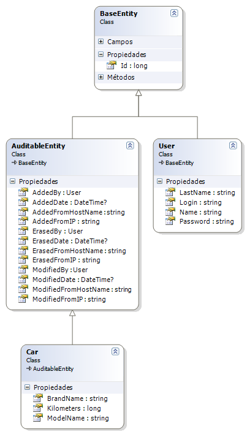

How to
Page Details

Simple audit metadata and logical deletion of business entities
This article is just about a simple way to achieve auditing and perform logical delete of your sensible data, doing use of the listeners features of NHibernate. Design patterns and architecture principles are outside of the scope of the article, this is just an example, take it as a guide.
Remember the old days when you had to audit data stored on your database, every time you build a query to insert, update or delete data, you had to “remember” to include the values for auditing (timestamp, user id). It was worse if you had stored procedures (by the way, i hate them) because suppose that was needed to take user credentials from another service to audit, you were limited by Transact-SQL language inside the stored procedure to access that service. Anyway, every time you build a query, you need those metadata values to store them, it could be good if you can centralize the place where you obtain and set those values (remember DRY).
Maybe, in a strict way, auditing would take place in the business layer, but we are not going to miss this feature that NHibernate has for us, so auditing will take place in the data access layer. With NHibernate we can override its native methods when performing data access, NHibernate will fire events which we will have to override to audit the data and of course to do a logical deletion of our entities.
Let’s get inside the code and explain the domain. In the example we have a BaseEntity for any persistible entity, and then, for the auditable entities, the AuditableEntity which inherits from BaseEntity. We want to audit the cars inside the database. We will audit the date and time, the user, the IP address and the hostname for each action on the entity (insert, update, delete), i think this auditing metada is fine, you can add more of course, your fantasy is your limit.
In fact this can’t be called audit, because we are not tracking changes of entities, just who did an action, when and from, pseudoaudit? [:D]

So, the example solution has a test fixture to test the purpose of the example. It was developed with NHibernate 2.1.0.2001.
No more words, show me the code.
Let’s see the mapping files.
Car.hbm.xml
<?xml version="1.0" encoding="utf-8" ?><!-- Code inserted with Steve Dunn's Windows Live Writer Code Formatter Plugin. http://dunnhq.com -->
<hibernate-mapping xmlns="urn:nhibernate-mapping-2.2"
assembly="AuditExample"
namespace="AuditExample.Entities">
<class name="Car" table="cars">
<id name="Id" type="Int64">
<generator class="hilo">
<param name="max_lo">50</param>
</generator>
</id>
<property name="BrandName" column = "brand_name"/>
<property name="ModelName" column = "model_name"/>
<property name="Kilometers" column = "kilometers"/>
<!--audit attributes-->
<many-to-one name="AddedBy" class="AuditExample.Entities.User, AuditExample"
column="added_user_id" not-null="false" />
<property name="AddedDate" column = "added_date"/>
<property name="AddedFromIP" column = "added_from_ip"/>
<property name="AddedFromHostName" column = "added_from_hostname"/>
<many-to-one name="ModifiedBy" class="AuditExample.Entities.User, AuditExample"
column="modified_user_id" not-null="false" />
<property name="ModifiedDate" column = "modified_date"/>
<property name="ModifiedFromIP" column = "modified_from_ip"/>
<property name="ModifiedFromHostName" column = "modified_from_hostname"/>
<many-to-one name="ErasedBy" class="AuditExample.Entities.User, AuditExample"
column="erased_user_id" not-null="false" />
<property name="ErasedDate" column = "erased_date"/>
<property name="ErasedFromIP" column = "erased_from_ip"/>
<property name="ErasedFromHostName" column = "erased_from_hostname"/>
<filter name="avoidLogicalDeleted" condition="erased_date IS NULL" />
</class>
<filter-def name="avoidLogicalDeleted" />
</hibernate-mapping>
It has the Id, 3 owned properties, and 9 properties for metadata auditing. The filter part is about logical deletes, we are going to talk about it in later.
The User.hbm.xml is really simple, we are not going to show it, it has no sense, anyway, the example solution can be downloaded.
Now it’s time to show the NHibernate configuration file.
hibernate.cfg.xml
<?xml version="1.0" encoding="utf-8"?><!-- Code inserted with Steve Dunn's Windows Live Writer Code Formatter Plugin. http://dunnhq.com -->
<hibernate-configuration xmlns="urn:nhibernate-configuration-2.2" >
<session-factory>
<property name="connection.driver_class">NHibernate.Driver.SqlClientDriver</property>
<property name="connection.connection_string">
Server=(local)\SQLEXPRESS;initial catalog=auditexample;Integrated Security=SSPI
</property>
<property name="adonet.batch_size">10</property>
<property name="show_sql">false</property>
<property name="dialect">NHibernate.Dialect.MsSql2005Dialect</property>
<property name="query.substitutions">true 1, false 0, yes 'Y', no 'N'</property>
<property name="proxyfactory.factory_class">
NHibernate.ByteCode.Castle.ProxyFactoryFactory, NHibernate.ByteCode.Castle
</property>
<mapping assembly="AuditExample"/>
<listener class="AuditExample.NHExtensions.CustomSaveUpdateEventListener, AuditExample"
type="save-update"/>
<listener class="AuditExample.NHExtensions.CustomDeleteEventListener, AuditExample"
type="delete"/>
</session-factory>
</hibernate-configuration>
Let’s analyze it, in the configuration file there is an attribute that is not so common, the listener attribute, as we mention before, with these attributes we are forcing NHibernate to lookup for the custom event listener that we inherited from the default listeners for ISession.Delete() and ISession.SaveUpdate() methods. Inside both class CustomSaveUpdateEventListener and CustomDeleteEventListener will appear a class called SecurityContext which handles the metada for auditing, this class will be discused later, after explaining both listeners.
CustomSaveUpdateEventListener.cs
public class CustomSaveUpdateEventListener : DefaultSaveOrUpdateEventListener<!-- Code inserted with Steve Dunn's Windows Live Writer Code Formatter Plugin. http://dunnhq.com -->
{
protected override object PerformSaveOrUpdate(SaveOrUpdateEvent evt)
{
var entity = evt.Entity as AuditableEntity;
if (entity != null){
if (entity.Id == 0)
ProcessEntityForInserting(entity);
else
ProcessEntityForUpdating(entity);
}
return base.PerformSaveOrUpdate(evt);
}
internal virtual void ProcessEntityForInserting(AuditableEntity entity)
{
entity.AddedDate = DateTime.Now;
entity.AddedBy = SecurityContext.LoggedUser ?? null;
entity.AddedFromIP = SecurityContext.GetHostIP();
entity.AddedFromHostName = SecurityContext.GetHostName();
}
internal virtual void ProcessEntityForUpdating(AuditableEntity entity)
{
entity.ModifiedDate = DateTime.Now;
entity.ModifiedBy = SecurityContext.LoggedUser ?? null;
entity.ModifiedFromIP = SecurityContext.GetHostIP();
entity.ModifiedFromHostName = SecurityContext.GetHostName();
}
}
CustomDeleteEventListener.cs
public class CustomDeleteEventListener : DefaultDeleteEventListener<!-- Code inserted with Steve Dunn's Windows Live Writer Code Formatter Plugin. http://dunnhq.com -->
{
protected override void DeleteEntity(IEventSource session, object entity,
NHibernate.Engine.EntityEntry entityEntry,
bool isCascadeDeleteEnabled,
NHibernate.Persister.Entity.IEntityPersister persister,
Iesi.Collections.ISet transientEntities)
{
var auditableEntity = entity as AuditableEntity;
if (auditableEntity != null){
ProcessEntityForLogicalDelete(auditableEntity);
this.CascadeBeforeDelete(session, persister, entity,
entityEntry, transientEntities);
this.CascadeAfterDelete(session, persister, entity,
transientEntities);
} else {
//normal delete
base.DeleteEntity(session, entity, entityEntry,
isCascadeDeleteEnabled, persister, transientEntities);
}
}
private void ProcessEntityForLogicalDelete(AuditableEntity entity)
{
entity.ErasedDate = DateTime.Now;
entity.ErasedBy = SecurityContext.LoggedUser ?? null;
entity.ErasedFromIP = SecurityContext.GetHostIP();
entity.ErasedFromHostName = SecurityContext.GetHostName();
}
}
SecurityContext.cs
/// <summary><!-- Code inserted with Steve Dunn's Windows Live Writer Code Formatter Plugin. http://dunnhq.com -->
/// Ridiculous simple crosscut security class to get user credentials and audit metadata
/// </summary>
public static class SecurityContext
{
//maybe System.Security.Principal.WindowsIdentity.GetCurrent().Name.ToString(), you decide
public static User LoggedUser {get; set;}
public static string GetHostName()
{
return Dns.GetHostName();
}
public static string GetHostIP()
{
IPAddress[] addresses = Dns.GetHostAddresses(Dns.GetHostName());
//be carefull and filter the public ip, use the local one
//and of course, this has no sense for an httpcontext, use remote host ip instead
if (addresses.Length > 0)
return addresses[0].ToString();
else
return null;
}
}
This class is just a simple helper to get the metadata needed for auditing, in this example it holds the session of the logged user too.
[TestFixture]<!-- Code inserted with Steve Dunn's Windows Live Writer Code Formatter Plugin. http://dunnhq.com -->
public class AuditTest
{
private Configuration _configuration;
private ISessionFactory _sessionFactory;
private User _sampleUser1;
private User _sampleUser2;
[TestFixtureSetUp]
public void TestFixtureSetUp()
{
XmlConfigurator.Configure();
_configuration = new Configuration();
_configuration.Configure();
_sessionFactory = _configuration.BuildSessionFactory();
//drop all tables on database
_sessionFactory.OpenSession().CreateSQLQuery(
"IF OBJECT_ID (N'dbo.cars', N'U') IS NOT NULL DELETE cars"
).ExecuteUpdate();
_sessionFactory.OpenSession().CreateSQLQuery(
"IF OBJECT_ID (N'dbo.users', N'U') IS NOT NULL DELETE users"
).ExecuteUpdate();
_sessionFactory.OpenSession().CreateSQLQuery(
"EXEC sp_MSforeachtable ?"
).SetParameter(0,"DROP TABLE ?").ExecuteUpdate();
new SchemaExport(_configuration).Create(false, true);
PrepareLoggedUsers();
}
[TestFixtureTearDown]
public void TestFixtureTearDown()
{
//new SchemaExport(_configuration).Drop(false, true);
_sessionFactory.Close();
}
[SetUp]
public void TestSetUp()
{
_sessionFactory.OpenSession().CreateQuery("delete Car").ExecuteUpdate();
}
private void PrepareLoggedUsers()
{
_sampleUser1 = new User() { Login = "rcarlomagno", Name = "Raul",
LastName = "Carlomagno", Password = "jijiji" };
_sampleUser2 = new User() { Login = "ndaponte", Name = "Nadia",
LastName = "Daponte", Password = "jujujuju" };
using (ISession session = _sessionFactory.OpenSession())
using (ITransaction transaction = session.BeginTransaction())
{
session.Save(_sampleUser1);
session.Save(_sampleUser2);
transaction.Commit();
}
SecurityContext.LoggedUser = _sampleUser1;
}
[Test]
public void CanAuditAddedEntity()
{
Car car = new Car() { BrandName = "Renault", ModelName = "Clio",
Kilometers = 110000 };
long carId;
using (ISession session = _sessionFactory.OpenSession())
using (ITransaction transaction = session.BeginTransaction())
{
session.SaveOrUpdate(car);
transaction.Commit();
carId = car.Id;
}
car = _sessionFactory.OpenSession().Get<Car>(carId);
Assert.IsNotNull(car);
Assert.IsNotNull(car.AddedDate);
Assert.IsNotNull(car.AddedBy);
Assert.IsFalse(string.IsNullOrEmpty(car.AddedFromHostName));
Assert.IsFalse(string.IsNullOrEmpty(car.AddedFromIP));
}
[Test]
public void CanAuditModifiedEntity()
{
long carId;
const string brandName = "Ford";
const string modelName = "Ka";
const long kilometers = 97544;
Car car = new Car() { BrandName = brandName, ModelName = modelName,
Kilometers = kilometers };
using (ISession session = _sessionFactory.OpenSession())
using (ITransaction transaction = session.BeginTransaction())
{
session.SaveOrUpdate(car);
transaction.Commit();
carId = car.Id;
}
car = _sessionFactory.OpenSession().Get<Car>(carId);
Assert.IsNotNull(car);
Assert.IsNotNull(car.AddedDate);
Assert.IsNotNull(car.AddedBy);
//let's change logged user and wait 2 seconds to change the car's data
SecurityContext.LoggedUser = _sampleUser2;
Thread.Sleep(2000);
car.Kilometers = 54000;
car.ModelName = "Fiesta";
using (ISession session = _sessionFactory.OpenSession())
using (ITransaction transaction = session.BeginTransaction())
{
session.SaveOrUpdate(car);
transaction.Commit();
}
car = _sessionFactory.OpenSession().Get<Car>(carId);
Assert.IsNotNull(car);
Assert.IsNotNull(car.ModifiedBy);
Assert.IsNotNull(car.ModifiedDate);
Assert.AreNotEqual(car.ModifiedDate, car.AddedDate);
Assert.AreNotEqual(car.ModifiedBy, car.AddedBy);
Assert.AreNotEqual(car.Kilometers, kilometers);
Assert.AreNotEqual(car.ModelName, modelName);
Assert.IsFalse(string.IsNullOrEmpty(car.ModifiedFromHostName));
Assert.IsFalse(string.IsNullOrEmpty(car.ModifiedFromIP));
}
[Test]
public void CanAuditErasedEntity()
{
const string brandName = "Citroen";
const string modelName = "C3";
const long kilometers = 74665;
long carId;
Car car = new Car() { BrandName = brandName, ModelName = modelName,
Kilometers = kilometers };
using (ISession session = _sessionFactory.OpenSession())
using (ITransaction transaction = session.BeginTransaction())
{
session.SaveOrUpdate(car);
transaction.Commit();
carId = car.Id;
}
using (ISession session = _sessionFactory.OpenSession())
using (ITransaction transaction = session.BeginTransaction())
{
session.Delete(car);
transaction.Commit();
}
car = _sessionFactory.OpenSession().Get<Car>(carId);
Assert.IsNotNull(car);
Assert.IsNotNull(car.ErasedBy);
Assert.IsNotNull(car.ErasedDate);
Assert.IsFalse(string.IsNullOrEmpty(car.ErasedFromHostName));
Assert.IsFalse(string.IsNullOrEmpty(car.ErasedFromIP));
ISession tmpSession = _sessionFactory.OpenSession();
tmpSession.EnableFilter("avoidLogicalDeleted");
Assert.AreEqual(0, tmpSession.CreateCriteria<Car>().List().Count);
tmpSession.DisableFilter("avoidLogicalDeleted");
Assert.AreEqual(1, tmpSession.CreateCriteria<Car>().List().Count);
}
}
This test fixture proves that i am not lying. :-)
A few last words, in CanAuditErasedEntity() method, at the end of it, it is supposed that if we deleted logically an entity, we don’t want to see it in the results, so before doing a Criteria or HQL to get some data, we must enable the filter on the ISession, because filters are disabled by default. I do not know if there is a way to enable it on the ISessionFactory, to avoid manually enable it each time we want to get some data.
Well, this is the first time i write an article, i hope the next will be better. Sorry for my english.